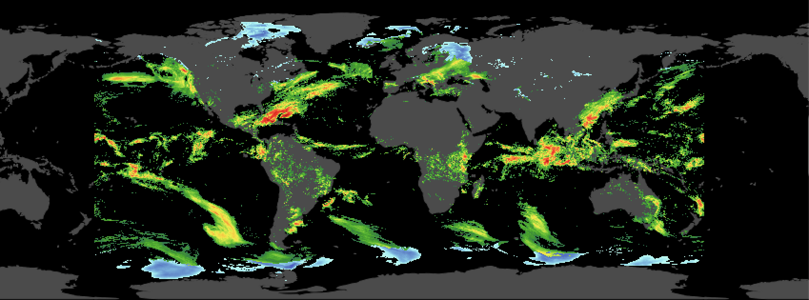

Image or video file
Analyze its visual pattern and, for video, changes over playback. Ask for location/time if the person wants a matched science layer. Save the file locally in the browser only if they choose to keep it.
Your proposed layout is stronger: a history sidebar for uploads and searches, one large image or video, horizontal chips for science layers, and a compact sound panel. On a phone, history becomes a drawer and the chips scroll sideways.
These are design mockups. Placeholder readings use dashes; the interface shows an exact number only after a real data response is matched to the media’s place and time.

MOVE OVER THE IMAGE TO HEAR LOCAL CHANGEWhat changes from the earlier options: the history list moves into the desktop sidebar, data layers become horizontal chips above the media, and instrument and sound variation chips stay in the sound panel. The phone keeps the same order: search, layers, media, readings, sound.
The search box can show two NASA result types and your own uploads. Meteomatics enriches a selected place and time; it is a measurement API, not a searchable photo or video library.
Analyze its visual pattern and, for video, changes over playback. Ask for location/time if the person wants a matched science layer. Save the file locally in the browser only if they choose to keep it.
Use the NASA Image and Video Library search endpoint with a query and image/video filter. Show title, thumbnail, NASA ID, credit, media type, and source link. This is the clear “find a picture or video” path.
Offer curated GIBS layers, including OCO-2 CO₂ imagery, and Earthdata catalog results with browse images. Show layer, legend, date, map extent, and source. These are mapped data views rather than generic photos.
Type “ocean currents,” “carbon dioxide,” or a place. Filter results by images, videos, or data layers.
Open one item in the media stage. Keep its NASA ID or Earthdata layer, attribution, time, and extent.
Enable chips only when the source can be aligned to a coordinate and UTC time. Meteomatics returns weather or marine values.
Store the source reference, selected chips, and sound profile. Reopen past uploads and searches from the sidebar or phone drawer.
EIC role: NASA’s Earth Information Center at Earth.gov is useful for curated Earth stories and inspiration. I found no public EIC media search API to treat as this app’s search backend. Use NASA Image and Video Library and Earthdata/GIBS for the actual search paths.
The chips select what the sound responds to. Readout cards can show every available measurement at once, with units, time, and source. Missing values stay visibly unavailable.
| Chip | Possible source | When it can show a number | Sound response |
|---|---|---|---|
| Visual pattern | Uploaded or NASA media pixels | Always after local image/video analysis; label as image-derived | Brightness, color, texture, or motion controls pitch and rhythm |
| CO₂ | NASA OCO-2 Earthdata/GIBS | Only with a documented data product and aligned coordinate/time; a colored pixel alone is not a ppm reading | Mapped CO₂ value or band controls a bounded pitch range |
| Air temperature | Meteomatics t_2m:C | Known coordinate and supported UTC time; account entitlement confirmed | Temperature controls pitch; label °C |
| Sea temperature | Meteomatics t_sea_sfc:C or a matched NASA product | Ocean coordinate and supported UTC time | Sea temperature controls tone color; label °C |
| Ocean current | Meteomatics ocean_current_speed:ms | Ocean coordinate and supported UTC time | Current speed controls pulse rate; label m/s |
| Wind / rain / more | Meteomatics available parameters or NASA layers | Only after per-parameter availability and units are checked | Different bounded mappings with a clear legend |
CO₂ correction: Meteomatics’ published trace-gas list includes carbon monoxide, methane, ozone, and others, but I did not find a CO₂ parameter there. Use a NASA OCO-2 product for the CO₂ chip. Do not present a CO₂ number from a NASA image unless the data product provides an aligned numerical value.
The locally configured ElevenLabs key and Meteomatics credentials authenticated in read-only requests. This checks access, not sound-generation permissions or every science parameter.
| Service | Documented path | Live check from this workspace | Implementation placement |
|---|---|---|---|
| ElevenLabs | GET /v1/user with xi-api-key; sound generation after key scope and quota check | Authenticated: GET /v1/user returned HTTP 200. Sound generation scope and quota still need a separate check | Server route only; browser receives approved audio assets, never the key |
| NASA media | GET https://images-api.nasa.gov/search?q=…&media_type=image,video | Live /search request returned HTTP 200 with image/video results | Server search adapter, with title, media type, credit, and NASA ID |
| NASA Earthdata | GIBS layer metadata and CMR collection/granule search | OCO-2 GIBS metadata and CMR collection search returned HTTP 200; map rendering and numeric sampling remain to be built | Curated layer catalog and image/map adapter |
| Meteomatics | Time + parameter + coordinate JSON request | Authenticated: air temperature and marine parameter requests returned HTTP 200; returned values still need schema and range validation | Server route with credentials, validation, and cache |
Implementation order: build the history and source picker, connect NASA media search, add curated Earthdata layers, then add matched Meteomatics readings and ElevenLabs sound assets. Keep browser sound responsive while external services are loading. No provider secret belongs in HTML or client code.